건축산업기사 (2019-04-27 기출문제)
1과목: 건축계획
1. 다음 중 주택 부엌의 기능적 측면에서 작업삼각형(work triangle)의 3변 길이의 합계로 가장 알맞은 것은?
- 1000mm
- 2000mm
- 3000mm
- 4000mm
(정답률: 76%)

2. 상점건축에서 진열창(show window)의 눈부심을 방지하는 방법으로 옳지 않은 것은?
- 곡면 유리를 사용한다.
- 유리면을 경사지게 한다.
- 진열창의 내부를 외부보다 어둡게 한다.
- 차양을 설치하여 진열창 외부에 그늘을 조성한다.
(정답률: 84%)
3. 숑바르 드 로브에 따른 주거면적기준 중 한계기준은?
- 8m2
- 14m2
- 15m2
- 16m2
(정답률: 76%)
4. 다음 설명에 알맞은 국지도로의 유형은?
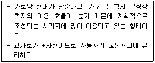
- T자형
- 격자형
- 루프(loop)형
- 쿨데삭(cul-de-sac)형
(정답률: 71%)
5. 학교의 배치계획에 관한 설명으로 옳은 것은?
- 분산병렬형은 넓은 교지가 필요하다.
- 폐쇄형은 운동장에서 교실로의 소음 전달이 거의 없다.
- 분산병렬형은 일조, 통풍 등 환경조건이 좋으나 구조계획이 복잡하다.
- 폐쇄형은 대지의 이용률을 높일 수 있으며 화재 및 비상 시 피난에 유리하다.
(정답률: 65%)
6. 공동주택에 관한 설명으로 옳지 않은 것은?
- 단독주택보다 독립성이 크다.
- 주거환경의 질을 높일 수 있다.
- 대지의 효율적 이용이 가능하다.
- 도시생활의 커뮤니티화가 가능하다.
(정답률: 84%)
7. 다음 설명에 알맞은 공장건축의 레이아웃 형식은?
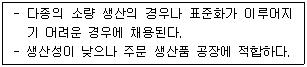
- 제품중심 레이아웃
- 공정중심 레이아웃
- 고정식 레이아웃
- 혼성식 레이아웃
(정답률: 68%)
8. 무창 방직공장에 관한 설명으로 옳지 않은 것은?
- 내부 발생 소음이 작다.
- 외부로부터의 자극이 적다.
- 내부 조도를 균일하게 할 수 있다.
- 배치계획에 있어서 방위를 고려할 필요가없다.
(정답률: 80%)
9. 모듈러 코디네이션(Modular Coordination)의 효과와 가장 거리가 먼 것은?
- 대량생산의 용이
- 설계작업의 단순화
- 현장작업의 단순화 및 공기 단축
- 건축물 형태의 창조성 및 다양성 확보
(정답률: 81%)
10. 사무소 건축의 실단위 계획 중 개방식 배치에 관한 설명으로 옳지 않은 것은?
- 독립성이 결핍되고 소음이 있다.
- 전면적을 유용하게 이용할 수 있다.
- 공사비가 개실 시스템보다 저렴하다.
- 방의 길이나 깊이에 변화를 줄 수 없다.
(정답률: 80%)
11. 다음 중 사무소 건축의 기둥 간격(span) 결정요인과 가장 거리가 먼 것은?
- 코어의 위치
- 책상의 배치 단위
- 구조상의 스팬의 한도
- 지하주차장의 주차구획크기
(정답률: 52%)
12. 사무실 건물에서 코어 내 각 공간의 위치관계에 관한 설명으로 옳지 않은 것은?
- 엘리베이터는 가급적 중앙에 집중시킬 것
- 코어내의 공간과 임대사무실 사이의 동선이 간단할 것
- 계단과 엘리베이터 및 화장실은 가능한 한 접근시킬 것
- 엘리베이터 홀은 출입구문에 인접하여 바싹접근해 있도록 할 것
(정답률: 80%)
13. 단독주택의 거실 계획에 관한 설명으로 옳지 않은 것은?
- 다목적 공간으로서 활용되도록 한다.
- 정원과 테라스에 시각적으로 연결되도록 한다.
- 개방된 공간으로 가급적 독립성이 유지되도록한다.
- 다른 공간들을 연결하는 통로로서의 기능을 우선 시 한다.
(정답률: 77%)
14. 다음 설명에 알맞은 사무소 건축의 코어 유형은?
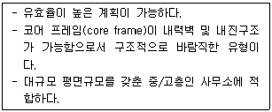
- 편심코어형
- 양단코어형
- 중심코어형
- 독립코어형
(정답률: 81%)
15. 공동주택의 형식 중 탑상형에 관한 설명으로 옳지않은 것은?
- 건축물 외면의 입면성을 강조한 유형이다.
- 판상형에 비해 경관 계획상 유리한 형식이다.
- 모든 세대에 동일한 거주 조건과 환경을 제공한다.
- 타워식의 형태로 도심지 및 단지 내의 랜드마크적인 역할이 가능하다.
(정답률: 72%)
16. 소규모 주택에서 주방의 일부에 간단한 식탁을 설치하거나 식사실과 주방을 하나로 구성한 형태를 무엇이라 하는가?
- 리빙 키친
- 다이닝 키친
- 리빙 다이닝
- 다이닝 테라스
(정답률: 81%)
17. 숍 프론트(shop front) 구성 형식 중 폐쇄형에 관한 설명으로 옳지 않은 것은?
- 고객이 내부 분위기에 만족하도록 계획한다.
- 고객의 출입이 많은 제과점 등에 주로 적용된다.
- 고객이 상점 내에 비교적 오래 머무르는 상점에 적합하다.
- 숍 프론트(shop front)를 출입구 이외에는 벽 등으로 차단한 형식이다.
(정답률: 76%)
18. 근린생활권의 구성 중 근린주구의 중심이 되는 시설은?
- 유치원
- 대학교
- 초등학교
- 어린이 놀이터
(정답률: 75%)
19. 백화점의 엘리베이터 배치 시 고려사항으로 옳지 않은 것은?
- 일렬 배치는 4대를 한도로 한다.
- 교통동선의 중심에 설치하여 보행거리가 짧도록 배치한다.
- 일렬 배치 시 엘리베이터 중심 간 거리는 15m 이하가 되도록 한다.
- 여러 대의 엘리베이터를 설치하는 경우, 그룹별 배치와 군 관리 운전방식으로 한다.
(정답률: 64%)
20. 우리나라 중학교에서 가장 많이 채택하고 있는 학교 운영방식은?
- 플래툰형(P형)
- 종합교실형(U형)
- 교과교실형(V형)
- 일반 및 특별교실형(U+V)형
(정답률: 73%)
2과목: 건축시공
21. 63.5k의 추를 76cm 높이에서 자유낙하시켜 30cm 관입하는데 필요한 타격횟수를 구하는 시험은?
- 전기탐사법
- 베인테스트(Vane test)
- 표준관입시험(Standard penetration test)
- 딘월샘플링(hin wall sampling)
(정답률: 81%)
22. 다음 중 공사시방서의 내용에 포함되지 않은 것은?
- 성능의 규정 및 지시
- 시험 및 검사에 관한 사항
- 현장 설명에 관련된 사항
- 공법, 공사 순서에 관한 사항
(정답률: 62%)
23. 조적식구조의 조적재가 벽돌인 경우 내력벽의 두계는 당해 벽높이의 최소 얼마 이상으로 하여야 하는가?
- 1/10
- 1/12
- 1/16
- 1/20
(정답률: 50%)
24. 타일의 크기가 11cm × 11cm 일 때 가로·세로의 줄눈은 6mm이다. 이 때 1m2에 소요되는 타일의 정미 수량으로 가장 적당한 것은?
- 34매
- 55매
- 65매
- 75매
(정답률: 58%)
25. 반복되는 작업을 수량적으로 도식화하는 공정관리기법으로 아파트 및 오피스 건축에서 주로 활용되는 것을 무엇이라고 하는가?
- 횡선식 공정표(Bar Chart)
- 네트워크 공정표
- PERT 공정표
- LOB(Line of balance) 공정표
(정답률: 57%)
26. 굳지 않은 콘크리트 성질에 관한 설명으로 옳지 않은 것은?
- 피니셔빌리티란 굵은골재의 최대치수, 잔골재율, 골재의 입도, 반죽질기 등에 따라 마무리하기 쉬운 정도를 말한다.
- 물-시멘트비가 클수록 컨시스턴시가 좋아 작업이 용이하고 재료분리가 일어나지 않는다.
- 블리딩이란 콘크리트 타설후 표면에 물이 모이게 되는 현상으로 레이턴스의 원인이된다.
- 워커빌리티란 작업의 난이도 및 재료의 분리에 저항하는 정도를 나타내며, 골재의 입도와도 밀접한 관계가 있다.
(정답률: 75%)
27. 마감공사 시 사용되는 철물에 관한 설명으로 옳지 않은 것은?
- 코너비드는 기둥과 벽 등의 모서리에 설치하여 미장면을 보호하는 철물이다.
- 메탈라스는 철선을 종횡 격자로 배치하고 그 교점을 전기저항용접으로 한 것이다.
- 인서트는 콘크리트 구조 바닥판 밑에 반자틀, 기타 구조물을 달아맬 때 사용된다.
- 펀칭메탈은 얇은 판에 각종모양을 도려낸 것을 말한다.
(정답률: 53%)
28. 사질토와 점토질을 비교한 내용으로 옳은 것은?
- 점토질은 투수계수가 작다.
- 사질토의 압밀속도는 느리다.
- 사질토는 불교란 시료 채집이 용이하다.
- 점토질의 내부마찰각은 크다.
(정답률: 54%)
29. 콘크리트에 사용하는 혼화재 중 플라이애쉬(Fly Ash)에 관한 설명으로 옳지 않은 것은?
- 화력발전소에서 발생하는 석탄회를 집진기로 포집한 것이다.
- 시멘트와 골재 접촉면의 마찰저항을 증가시킨다.
- 건조수축 및 알칼리골재반응 억제에 효과적이다.
- 단위수량과 수화열에 의한 발열량을 감소시킨다.
(정답률: 45%)
30. 미장공사의 바름층 구성에 관한 설명으로 옳지 않은 것은?
- 일반적으로 바탕조정과 초벌, 재벌, 정벌의 3개층으로 이루어진다,
- 바탕조정 작업에서는 바름에 앞서 바탕면의 흡수성을 조정하되, 접착력 유지를 위하여 바탕면의 물축임을 금한다.
- 재벌바름은 미장의 실체가 되며 마감면의 평활도와 시공 정도를 좌우한다.
- 정벌바름은 시멘트질 재료가 많아지고 세골재의 치수도 작기 때문에 균열 등의 결함 발생을 방지하기 위해 가능한 한 얇게 바르며 흙손 자국을 없애는 것이 중요하다.
(정답률: 61%)
31. 연약점토질 지반의 점착력을 측정하기 위한 가장 적합한 토질시험은?
- 전기적탐사
- 표준관입시험
- 베인테스트
- 삼축압축시험
(정답률: 71%)
32. 공동도급의 특징으로 옳지 않은 것은?
- 기술력 확충
- 신용도의 증대
- 공사계획 이행의 불확실
- 융자력 증대
(정답률: 71%)
33. 흙막이 공법 중 수평버팀대의 설치 작업순서로 옳은 것은?
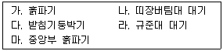
- 가→라→나→다→마
- 가→라→다→나→마
- 라→가→마→다→나
- 라→가→다→나→마
(정답률: 50%)
34. 금속커튼월의 성능시험 관련 실물모형시험(mock up test)의 시험종목에 해당하지 않는 것은?
- 비비시험
- 기밀시험
- 정압 수밀시험
- 구조시험
(정답률: 63%)
35. 커튼월을 외관형태로 분류할 때 그 종류에 해당되지 않는 것은?
- 슬라이드 방식(slide type)
- 샛기둥 방식(mullion type)
- 스팬드럴 방식(spandrel type)
- 격자 방식(grid type)
(정답률: 51%)
36. ALC(Autoclaved Lightweight Concrete)의 물리적 성질 중 옳지 않은 것은?
- 기건비중은 보통콘크리트의 약 1/4정도이다.
- 열전도율은 보통콘크리트와 유사하나 단열성은 매우 우수하다.
- 불연재인 동시에 내화성능을 가진 재료이다.
- 경량이어서 인력에 의한 취급이 용이하다.
(정답률: 59%)
37. 금속의 방식방법에 관한 설명으로 옳지 않은 것은?
- 큰 변형을 준 것은 가능한 풀림하여 사용한다.
- 도료 또는 내식성이 큰 금속을 사용하여 수밀성 보호피막을 만든다.
- 부분적으로 녹이 발생하는 녹이 최대로 발생할 때까지 기다린 후에 한꺼번에 제거한다.
- 표면을 평활, 청결하게 하고 가능한 한 건조한 상태로 유지한다.
(정답률: 75%)
38. 철공공사에서 녹막이 칠을 하지 않는 부위와 거리가 먼 것은?
- 콘크리트에 밀착 또는 매립되는 부분
- 폐쇄형 단면을 한 부재의 외면
- 조립에 의해 서로 밀착되는 면
- 현장용접을 하는 부위 및 그곳에 인전하는 양측 100mm 이내
(정답률: 53%)
39. 일반적인 적산 작업 순서가 아닌 것은?
- 수평방향에서 수직방향으로 적산한다.
- 시공순서대로 적산한다.
- 내부에서 외부로 적산한다.
- 아파트 공사인 경우 전체에서 단위세대로 적산한다.
(정답률: 61%)
40. 합성고분자계 시트방수의 시공 공법이 아닌 것은?
- 떠붙이기공법
- 접착공법
- 금속고정공법
- 열풍융착공법
(정답률: 51%)
3과목: 건축구조
41. 다음 구조물의 판별로 옳은 것은?
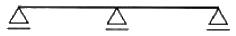
- 불안정 구조물
- 정정 구조물
- 1차 부정정 구조물
- 2차 부정정 구조물
(정답률: 52%)
42. 그림과 같은 구조물에서 지점 A의 수평반력은?
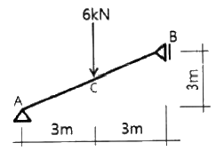
- 3 kN
- 4 kN
- 5 kN
- 6 kN
(정답률: 51%)
43. 그림과 같은 캔틸레버 보에서 B와 C점의 처짐의 비 δB : δC 는?
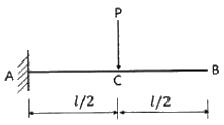
- 1 : 2
- 2 : 1
- 2 : 5
- 5 : 2
(정답률: 40%)
44. 다음 각 슬래브에 관한 설명으로 옳지 않은 것은?
- 장선슬래브는 2방향으로 하중이 전달되는 슬래브이다.
- 슬래브의 두께가 구조제한 조건에 따르지 않을 경우 슬래브 처짐과 진동의 문제가 발생할 수 있다.
- 플랫슬래브는 보가 없으므로 천장고를 낮추기 위한 방법으로도 사용된다.
- 워플슬래브는 일종의 격자시스템 슬래브 구조이다.
(정답률: 52%)
45. 그림과 같은 보의 허용하중은? (단, 허용 휨응력도 σb = 10MPa 임)
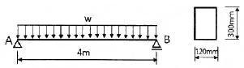
- 9 kN/m
- 8 kN/m
- 7 kN/m
- 6 kN/m
(정답률: 40%)
46. 그림과 같은 인장재의 순단면적을 구하면? (단, 고장력볼트는 M22(F10T), 판의 두께는8mm 이다.)
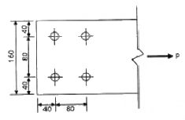
- 512 mm2
- 704 mm2
- 896 mm2
- 1088 mm2
(정답률: 40%)
47. 아래 그림과 같은 트러스에서 AB부재의 부재력의 크기는? (단, +는 인장, -는 압축임)
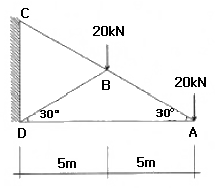
- +20 kN
- -20 kN
- +40 kN
- -40 kN
(정답률: 44%)
48. 폭 b, 높이 h인 삼각형에서 밑변 축(X1-X1)에 대한 단면계수는 꼭짓점 축(X2-X2)에 대한 단면계수의 몇 배인가?
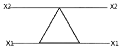
- 8배
- 6배
- 4배
- 2배
(정답률: 40%)
49. 강구조 설계에서 볼트의 중심사이 거리를 나타내는 용어는?
- 게이지 라인(gauge line)
- 게이지(gauge)
- 피치(pitch)
- 비드(bead)
(정답률: 60%)
50. 프리스트레스하지 않는 현장치기 콘크리트에서 흙에 접하여 콘크리트를 친 후 영구히 흙에 묻혀 있는 콘크리트의 경우 철근에 대한 콘크리트의 최소 피복두께는?(2021년 개정된 규정 적용됨)
- 45 mm
- 65 mm
- 75 mm
- 95 mm
(정답률: 49%)
51. 그림과 같은 충전형 원형강관 합성기둥의 강재비는?
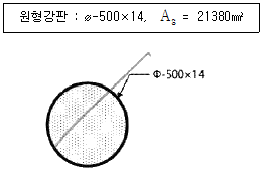
- 0.027
- 0.109
- 0.145
- 0.186
(정답률: 37%)
52. 그림과 같은 단순보에 집중하중 10kN이 특정각도로 작용할 때 B지점의 반력으로 옳은 것은?
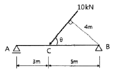
- HB = 6kN, VB = 5kN
- HB = 5kN, VB = 6kN
- HB = 3kN, VB = 6kN
- HB = 6kN, VB = 3kN
(정답률: 37%)
53. 강구조 인장재에 관한 설명으로 옳지 않은 것은?
- 부재의 축방향으로 인장력을 받는 구조부재이다.
- 대표적인 단면형태로는 강봉, ㄱ형강, T형강이 주로 사용된다.
- 인장재 설계에서 단면결손 부분의 파단은 검토하지 않는다.
- 현수구조에 쓰이는 케이블이 대표적인 인장재이다.
(정답률: 59%)
54. 다음 그림과 같은 단면은 X축과 Y축에 대한 단면2차모멘트의 값은? (단, 그림의 점선은 단면의 중심축임)
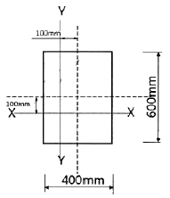
- X축 : 72 × 108mm4, Y축 : 32 × 108mm4
- X축 : 96 × 108mm4, Y축 : 56 × 108mm4
- X축 : 144 × 108mm4, Y축 : 64 × 108mm4
- X축 : 288 × 108mm4, Y축 : 128 × 108mm4
(정답률: 41%)
55. 한변의 길이가 4m인 그림과 같은 정삼각형트러스에서 AB부재의 부재력은?
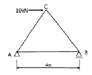
- 압축 10 kN
- 압축 5 kN
- 인장 10 kN
- 인장 5 kN
(정답률: 29%)
56. 구조물의 한계상태에는 강도한계상태와 사용성한계상태가 있다. 강도한계상태에 영향을 미치는 요소와 가장 거리가 먼 것은?
- 부재의 과다한 탄성변형
- 기둥의 좌굴
- 골조의 불안정성
- 접합부 파괴
(정답률: 37%)
57. 강도설계법에 의한 철근콘크리트 직사각형보에서 콘크리트가 부담할 수 있는 공칭전단강도는? (단, fck=24MPa, b=300mm, d=500mm, 경량콘크리트계수는 1)
- 69.3 kN
- 82.8 kN
- 91.9 kN
- 122.5 kN
(정답률: 36%)
58. 다음 그림과 같은 고장력 볼트 접합부의 설계미끄럼강도는?
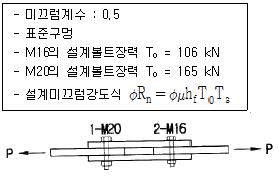
- 212 kN
- 184 kN
- 165 kN
- 148 kN
(정답률: 38%)
59. 그림과 같은 하중을 받는 기초에서 기초지반면에 일어나는 최대압축응력도는?
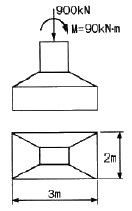
- 0.15 MPa
- 0.18 MPa
- 0.21 MPa
- 0.25 MPa
(정답률: 40%)
60. 강도설계법에서 압축 이형철근 D22의 기본정착길이는? ( 단, fck=24MPa, fy=400MPa, λ=1.0))
- 400 mm
- 450 mm
- 500 mm
- 550 mm
(정답률: 50%)
4과목: 건축설비
61. 최상부의 배수수평관이 배수수직관에 접속된 위치보다도 더욱 위로 배수수직관을 끌어올려 통기관으로 사용하는 부분으로 대기 중에 개구하는 것은?
- 신정통기관
- 각개통기관
- 결합통기관
- 루프통기관
(정답률: 63%)
62. 보일러에 관한 설명으로 옳지 않은 것은?
- 주철제보일러는 내식성이 강하여 수명이 길다.
- 입형보일러는 설치 면적이 작고 취급이 용이하다.
- 관류보일러는 보유수량이 크기 때문에 가동시간이 길다.
- 수관보일러는 대형건물 또는 병원 등과 같이 고압증기를 다량 사용하는 곳에 사용된다.
(정답률: 43%)
63. 전기설비에서 간선 크기의 결정 요소에 속하지 않는 것은?
- 전압 강하
- 송전 방식
- 기계적 강도
- 전선의 허용전류
(정답률: 51%)
64. 보일러 주변을 하트포드(Hartford) 접속으로 하는 가장 주된 이유는?
- 소음을 방지하기 위해서
- 효율을 증가시키기 위해서
- 스케일(scale)을 방지하기 위해서
- 보일러 내의 안전수위를 확보하기 위해서
(정답률: 54%)
65. 배수설비에서 트랩의 봉수파괴 원인과 가장 거리가 먼 것은?
- 증발
- 공동현상
- 모세관현상
- 유도사이펀작용
(정답률: 62%)
66. 다음과 같은 특징을 갖는 배선 공사는?
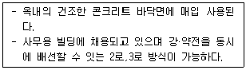
- 금속몰드 공사
- 비스덕트 공사
- 금속덕트 공사
- 플로어덕트 공사
(정답률: 68%)
67. 방열량이 4200W 이고 입출구 수온차가 10℃인 방열기의 순환수량은? (단, 물의 비열은 4.2 kJ/kg·K 이다.)
- 100 kg/h
- 360 kg/h
- 500 kg/h
- 720 kg/h
(정답률: 42%)
68. 자동화재탐지설비의 감지기 중 설치된 감지기의 주변온도가 일정한 온도상승률 이상으로 되었을 경우에 작동하는 것은?
- 차동식
- 정온식
- 광전식
- 이온화식
(정답률: 51%)
69. 다음의 공기조화방식 중 에너지 손실이 가장 큰 것은?
- 이중덕트방식
- 유인유닛방식
- 정풍량 단일덕트방식
- 변풍량 단일덕트방식
(정답률: 63%)
70. 배관 중의 이물질 등을 제거하기 위해 설치하는 것은?
- 볼탭
- 부싱
- 체크밸브
- 스트레이너
(정답률: 50%)
71. 피보호물을 연속된 망상도체나 금속판으로 싸는 방법으로 뇌격을 받더라도 내부에 전위차가 발생하지 않으므로 건물이나 내부에 있는 사람에게 위해를 주지 않는 피뢰설비 방식은?
- 돌침 방식(보통보호)
- 게이지 방식(완전보호)
- 수평도체 방식(증강보호)
- 가공지선 방식(간이보호)
(정답률: 66%)
72. 10cm두께의 콘크리트 벽 양쪽 표면의 온도가 각각 5℃, 15℃ 로 일정할 때, 벽을 통과하는 전도 열량은? (단, 콘크리트의 열전도율은 1.6W/m·K 이다.)
- 16 W/m2
- 32 W/m2
- 160 W/m2
- 320 W/m2
(정답률: 48%)
73. 바닥복사난방에 관한 설명으로 옳지 않은 것은?
- 쾌적감이 높다.
- 매립코일이 고장나면 수리가 어렵다.
- 열용량이 작기 때문에 간혈난방에 적합하다.
- 외기침입이 있는 곳에서도 난방감을 얻을 수 있다.
(정답률: 66%)
74. 급수방식에 관한 설명으로 옳은 것은?
- 수도직결방식은 수질 오염의 가능성이 가장높다.
- 압력수조방식은 급수압력이 일정하다는 장점이 있다.
- 펌프직송방식은 급수 압력 및 유량 조절을 위하여 제어의 정밀성이 요구된다.
- 고가수조방식은 고가수조의 설치높이와 관계없이 최상층 세대에 충분한 수압으로 급수 할 수 있다.
(정답률: 55%)
75. 다음과 같은 조건에서 틈새바람 100m3/h 가 실내로 유입되었다. 이로 인해 발생하는 냉방현열부하는?
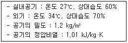
- 약 174 W
- 약 236 W
- 약 350 W
- 약 465 W
(정답률: 48%)
76. 방축열 시스템에 관한 설명으로 옳지 않은 것은?
- 저온용 냉동기가 필요하다.
- 얼음을 축열 매체로 사용하여 냉열을 얻는다.
- 주간의 피크부하에 해당하는 전력을 사용한다.
- 응고 및 융해열을 이용하므로 저장열량이 크다.
(정답률: 55%)
77. 중앙식 급탕법 중 직접가열식에 관한 설명으로 옳지 않은 것은?
- 대규모 급탕설비에는 비경제적이다.
- 급탕탱크용 가열코일이 필요하지 않다.
- 보일러 내면의 스케일은 간접가열식보다 많이 생긴다.
- 건물의 높이가 높을 경우라도 고압 보일러가 필요하지 않다.
(정답률: 54%)
78. 옥내소화전설비를 설치하여야 하는 건축물에서 옥내소화전의 설치개수가 가장 많은 층의 설치개수가 4개인 경우, 옥내소화전설비의 수원의 저수량은 최소 얼마 이상이 되도록 하여야하는가?(2021년 04월 01일 개정된 규정 적용됨)
- 1.3 m3
- 2.6 m3
- 5.2 m3
- 10.4 m3
(정답률: 65%)
79. 정화조에서 호기성균에 의하여 오수를 처리하는 곳은?
- 부패조
- 여과조
- 산화조
- 소독조
(정답률: 68%)
80. 다음 중 효율이 가장 높지만 등황색의 단색광으로 색채의 식별이 곤란하므로 주로 터널조명에 사용하는 것은?
- 형광램프
- 고압수은램프
- 저압나트륨램프
- 메탈핼라이드램프
(정답률: 63%)
5과목: 건축관계법규
81. 신축 또는 리모델링하는 경우, 시간당 0.5회 이상의 환기가 이루어질 수 있도록 자연환기 설비 또는 기계환기설비를 설치하여야 하는 대상 공동주택의 최소 세대수는?
- 50세대
- 100세대
- 200세대
- 300세대
(정답률: 57%)
82. 건축물의 대지에 소규모 휴식시설 등의 공개 공지 또는 공개 공간을 설치하여야 하는 대상 지역에 속하지 않는 것은?
- 상업지역
- 준거주지역
- 전용주거지역
- 일반주거지역
(정답률: 58%)
83. 주차장 주차단위구획의 최소 크기로 옳은 것은? (단, 일반형으로 평행주차형식의 경우)
- 너비 : 1.7 m, 길이 : 4.5 m
- 너비 : 2.0 m, 길이 : 6.0 m
- 너비 : 2.0 m, 길이 : 3.6 m
- 너비 : 2.3 m, 길이 : 5.0 m
(정답률: 57%)
84. 다음은 노외주차장의 구조 · 설비기준 내용이다. ( )안에 알맞은 것은?
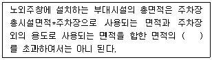
- 5%
- 10%
- 15%
- 20%
(정답률: 40%)
85. 공동주택과 위락시설을 같은 건축물에 설치하고자 하는 경우, 충족해야 할 조건에 관한 기준 내용으로 옳지 않은 것은?
- 건축물의 주요 구조부를 내화구조로 할 것
- 공동주택과 위락시설은 서로 이웃하도록 배치 할 것
- 공동주택과 위락시설은 내화구조로 된 바닥 및 벽으로 구획하여 서로 차단할 것
- 공동주택의 출입구와 위락시설의 출입구는 서로 그 보행거리가 30m 이상이 되도록 설치 할 것
(정답률: 62%)
86. 제1종 일반주거지역안에서 건축할 수 잇는 건축물에 속하지 않는 것은?
- 아파트
- 고등학교
- 초등학교
- 노유자시설
(정답률: 73%)
87. 건물의 바깥쪽에 설치하는 피난계단의 구조에 관한 기준 내용으로 옳지 않은 것은?
- 계단의 유효너비는 0.9m 이상으로 할 것
- 계단은 내화구조로 하고 지상까지 직접 연결되도록 할 것
- 건축물의 내부에서 계단으로 통하는 출입구에는 갑종방화문을 설치할 것
- 건축물의 내부에서 계단실로 통하는 출입구의 유효너비는 0.9m 이상으로 할 것
(정답률: 46%)
88. 허가 대상 건축물이라 하더라도 신고를 하면 건축 허가를 받은 것으로 볼 수 있는 경우에 관한 기준 내용으로 옳지 않은 것은?
- 바닥면적의 합계가 85m2 이내의 개축
- 바닥면적의 합계가 85m2 이내의 증축
- 연면적의 합계가 100m2 이하인 건축물의 건축
- 연멱적이 200m2 미만이고 4층 미만인 건축물의 대수선
(정답률: 59%)
89. 부설주차장의 총주차대수 규모가 8대 이하인 자주식 주차장의 주차형식에 따른 차로의 너비 기준으로 옳은 것은? (단, 주차장은 지평식이며, 주차단위구획과 접하여 잇는 차로의 경우)
- 평행주차 : 2.5m 이상
- 직각주차 : 5.0m 이상
- 교차주차 : 3.5m 이상
- 45도 대항주차 : 3.0m 이상
(정답률: 48%)
90. 다음은 건축물 층수 산정에 관한 기준 내용이다. ( )안에 알맞은 것은?
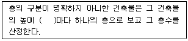
- 3m
- 3.5m
- 4m
- 4.5m
(정답률: 71%)
91. 다음 중 건축기준의 허용오차(%)가 가장 큰 항목은?
- 건폐율
- 용적률
- 평면길이
- 인접건축물과의 거리
(정답률: 61%)
92. 승용승강기 설치 대상 건축물로서 6층 이상의 거실 면적의 합계가 2000m2인 경우, 다음 중 설치하여야 하는 승용승강기의 최소 대수가 가장 많은 건축물은? (단, 8인승 승용승강기의 경우)
- 의료시설
- 업무시설
- 위락시설
- 숙박시설
(정답률: 68%)
93. 세대수가 20세대인 주거용 건축물에 설치하는 음용수용 급수관의 최소 지름은?
- 25mm
- 32mm
- 40mm
- 50mm
(정답률: 41%)
94. 건축법령상 의료시설에 속하지 않는 것은?
- 치과병원
- 동물병원
- 한방병원
- 마약진료소
(정답률: 52%)
95. 연면적이 200m2를 초과하는 건축물에 설치하는 복도의 유효너비는 최소 얼마 이상으로 하여야하는가? (단, 건축물은 초등학교이며, 양옆에 거실이 있는 복도의 경우)
- 1.2m
- 1.5m
- 1.8m
- 2.4m
(정답률: 31%)
96. 국토의 계획 및 이용에 관한 법령상 공업지역의 세분에 속하지 않는 것은?
- 준공업지역
- 중심공업지역
- 일반공업지역
- 전용공업지역
(정답률: 38%)
97. 건축물에 급수, 배수, 환기, 난방 설비 등의 건축 설비를 설치하는 경우 건축기계설비기술사 또는 공조냉동기계기술사의 협력을 받아야 하는 대상 건축물에 속하지 않는 것은?
- 아파트
- 연립주택
- 다세대주택
- 숙박시설로서 해당 용도에 사용되는 바닥면적의 합계가 2000m2인 건축물
(정답률: 43%)
98. 건축법령상 연립주택의 정의로 가장 알맞은 것은?
- 주택으로 쓰는 1개 동의 바닥면적 합계가 660m2 이하이고, 층수가 4개 층 이하인 주택
- 주택으로 쓰는 1개 동의 바닥면적 합계가 660m2를 초과하고, 층수가 4개 층 이하인 주택
- 1개 동의 주택으로 쓰이는 바닥면적의 합계가 330m2이하이고 주택으로 쓰는 층수가 3개층 이하인 주택
- 1개 동의 주택으로 쓰이는 바닥면적의 합계가 330m2를 초과하고 주택으로 쓰는 층수가 3개층 이하인 주택
(정답률: 50%)
99. 다음 중 노외주차장의 출구 및 입구를 설치할 수 잇는 장소는?
- 너비가 3m 인 도로
- 종단보도로부터 12% 인 도로
- 횡단보도로부터 8m 거리에 잇는 도로의 부분
- 초등학교 출입구로부터 15m 거리에 있는 도로의 부분
(정답률: 47%)
100. 문화 및 집회시설 중 공연장의 개별 관람석의 바닥면적이 800m2인 경우 설치하여야 하는 최고 출구수는? (단, 각 출구의 유효너비는 기준상 최소로 한다.)
- 5개소
- 4개소
- 3개소
- 2개소
(정답률: 51%)
주택 부엌의 작업삼각형에서 가장 긴 변은 싱크대와 가스레인지를 연결한 변입니다. 이 변의 길이는 보통 1500mm에서 2400mm 사이입니다. 다음으로 긴 변은 가스레인지와 냉장고를 연결한 변으로, 이 변의 길이는 보통 1200mm에서 1800mm 사이입니다. 마지막으로 싱크대와 냉장고를 연결한 변의 길이는 보통 900mm에서 1200mm 사이입니다.
따라서, 주택 부엌의 작업삼각형의 3변 길이의 합계는 2400mm + 1800mm + 1200mm = 5400mm가 됩니다. 하지만 이는 일반적인 경우이며, 주택의 크기나 부엌의 구조에 따라 변의 길이가 다를 수 있습니다. 따라서, 주어진 보기 중에서 작업삼각형의 3변 길이의 합계가 가장 알맞은 것은 "4000mm"입니다.